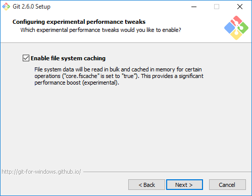
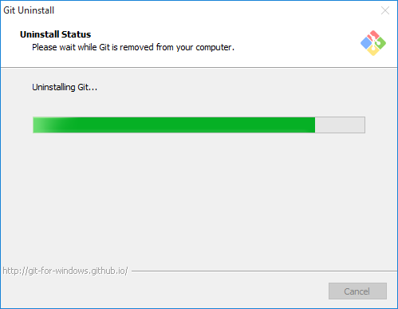

1. Solicitud de alta
* Para hacerlo, entra auna vez allí date de alta en g+ (si no lo has hecho) siguiendo el enlace en +me o +yo en la parte superior derecha
1. Instalación de Node.js
* Si estás en Windows sigue las instrucciones en GitHub para Windows
2. Comprueba que npm funciona
* Desde la consola comprobamos si la utilidad de la linea de comandos npm funciona.
3. Instala express
* Para instalar express tenemos que tener el npm iniciado.
\$ mkdir myapp
\$ cd myapp
\$ npm init
\$ npm install express --save

1. GitHub para Windows
* Si estás en Windows sigue las instrucciones en GitHub para Windowshttps://git-for-windows.github.io
* Descarga e instala el fichero : Git-2.6.0-64-bit.exe

 
Ya tenemos una cuenta publica abierta y esta en el siguiente enlace:
Desde el siguiente enlace se puede Descargar y instalar GitHub Para Windows Desktop.
1. Descargar el instalador
* Desde el siguiente enlace se puede Descargar y instalar atom Para Windows Desktop.2. Prueba
* Ya tenemos el atom instalado! * Abre una cuenta en c9.io (cloud9). Vincula tu cuenta de GitHub con c9. * Para instalar en Windows:https://github.com/jgm/pandoc/releases/tag/1.15.0.6
* Pandoc Getting started.http://pandoc.org/getting-started.html/